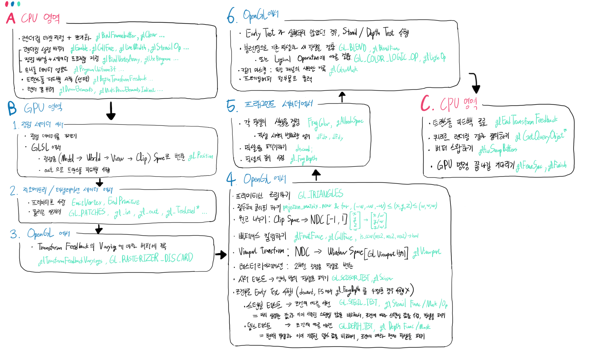
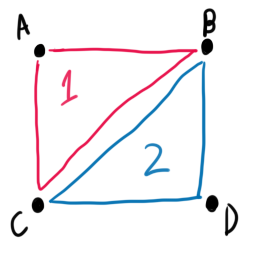
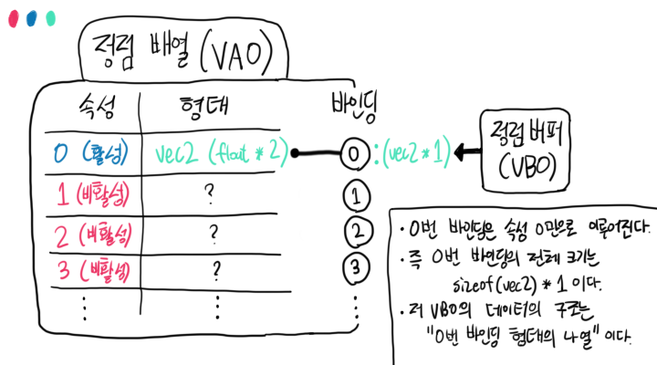
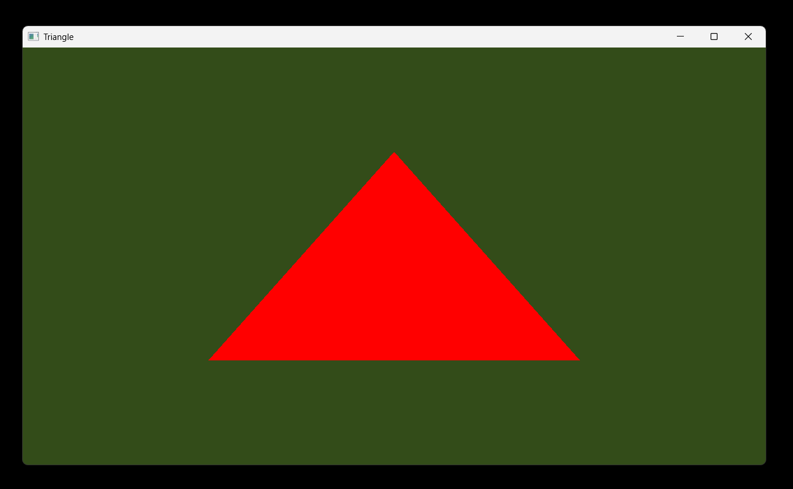

02. 삼각형 그리기
목차
- OpenGL 프로그램의 구조
- 한 프레임이 그려지는 과정
- 정점 배열 (Vertex Array)
- 정점 버퍼 (Vertex Buffer)
- 인덱스 버퍼 (Index Buffer)
- GLSL 소개
- 셰이더 프로그램
- 삼각형 그리기 예제
OpenGL 프로그램의 구조
그래픽스 공부의 시작인 삼각형 그리기를 하기 전에, 우선 OpenGL의 구조를 간단하게 알 필요가 있습니다.
"OpenGL 프로그램을 만든다" 고 하면, 실행 흐름은 대개 이러한 형태가 됩니다.
1. 창을 띄우고 GL 함수를 셋업한다.
2. VAO, VBO, Texture, Shader 등의 '렌더링 자원'을 셋업한다.
3. (2)에서 만든 자원을 가지고 한 프레임을 렌더링한다.
4. 창이 닫힐 때까지 (3)을 반복한다.
5. 렌더링 자원을 해제하고 창을 종료한다.
그러면 렌더링 자원에 대해 알아봅시다.
OpenGL에서는, gl 이라는 접두어로 시작하는 함수들을 통해서
- 렌더링 자원을 생성 / 해제하고
- 해당 자원에 정보를 업로드 / 다운로드 하거나
- 이 자원을 어떻게 사용할 것인지
를 명시할 수 있습니다.
그렇게 생성한 렌더링 자원들을 가지고, GL 함수들을 통해
- 각 자원들을 또다른 자원에 첨부 / 연결하고
- 렌더링 관련 설정들을 한 후에
- 최종적으로 '드로우 콜' 을 부르면
화면에 무언가가 그려지는 것입니다.
OpenGL에서 사용되는 렌더링 자원의 종류는 다음과 같습니다.
| 자원 이름 | 역할 |
|---|---|
| Vertex Array | 정점 버퍼와 인덱스 버퍼가 어떻게 생겼는지 나타내는 자원. 드로우 콜을 부를 때 필수. |
| Buffer | 정점 데이터와 인덱스 데이터를 (GPU에) 업로드할 때 쓰는 자원. 사실 그냥 데이터 덩어리이며, 여러 관점(View)을 통해서 다른 용도로 사용 가능. |
| Texture Buffer | 일련의 데이터 저장공간. Texture처럼 셰이더에서 샘플링 불가(samplerBuffer). 대신 인덱스로 접근. |
| Pixel Buffer | CPU단의 블로킹 없이 GPU에서 비동기 데이터 전송. Pack(GPU에서 가져오기, glReadPixels) / Unpack(CPU에서 가져오기, glTexImage2D) |
| Texture | 1 / 2 / 3차원 데이터(ex: 이미지) 를 저장할 때 쓰는 자원. 필터를 설정하고 셰이더 차원에서 샘플링이 가능. |
| Shader | Program에 첨부되는, 파이프라인의 구성 요소. GLSL 코드를 컴파일하여 바이너리를 들고 있음. |
| Program | Shader의 집합으로, '사용자 컨트롤 가능'한 파이프라인에서 가장 중요. |
| Framebuffer | 현재 드로우콜이 결국 어디에 그러질지를 결정. 첨부된 Texture와 Render Buffer를 출력으로 지정함. |
| Renderbuffer | Framebuffer에 첨부되며, Texture와 똑같이 일련의 데이터를 저장하지만 Depth / Stencil 저장에 특화된 버퍼. Depth / Stencil Test를 하려면 필수. |
| TransformFeedback | 말 그대로 트랜스폼 피드백(GPU단에서 정점을 캡처, 저장하고 다음에 사용)을 위한 자원. |
| Sync | CPU에서 GPU의 명령이 끝나기를 기다리도록 하는 동기화 도구. |
| Query | 특정 렌더 자원의 여러 정보를 질의(query) 할 수 있는 도구. |
버퍼를 바라보는(=해석하는) 관점(View)들 은 다음과 같습니다.
(버퍼는 그냥 메모리 덩어리이기 때문에, 원하는 사용처에 따라서 별명이 바뀔 수 있습니다. 또 A로써 사용하던 버퍼를 B로써 쓸 수 도 있습니다.)
| 관점 이름 | 설명 |
|---|---|
| Vertex Buffer | 정점 정보를 담기 위한 공간. 사실 관점이라기보단 정점 배열의 '슬롯' 이름에 가까움 |
| Index Buffer (=Element Buffer) | 인덱스 정보를 담기 위한 공간. 정점버퍼와 마찬가지로 실질적인 관점은 아님 |
| Uniform Buffer | 전역 셰이더 저장공간. GPU에서 쓰기 불가능. 대충 몇십 KB. 인스턴싱에 유용함. |
| Shader Storage Buffer | 전역 셰이더 저장공간. GPU에서 쓰기 가능. 대충 몇 GB. Compute Shader에서 주로 사용되며 그 경우에는 동기화 필요. |
| Transform Feedback Buffer | 트랜스폼 피드백을 수행한 결과물이 저장되는 공간 |
| Draw Indirect Buffer | Indirect Draw 전용 렌더 콜 구성정보 저장공간. GPU-Driven Rendering의 중요 요소. 이걸로 GPU단에서 간접적으로 렌더 콜들을 해석. |
앞으로는 위의 자원들을 다음과 같이 줄여 부를 수 있다는 점 알아주세요.
- Vertex Array = VA, VAO
- Framebuffer = FB, FBO
- Shader Storage Buffer = SSBO
(뒤에 O는 Object의 O입니다.)
이 편에서는 VAO, VBO, EBO, Shader, Program만 소개합니다.
저 다섯 개는 삼각형 그리기에 꼭 필요한 자원들입니다.
한 프레임이 그려지는 과정
위에서 언급했던, '한 프레임을 렌더링' 한다는 것의 의미를 알아봅시다.
한 프레임동안 OpenGL이 실행되는(=화면에 무언가 그려지는) 과정을 순서도로 나타내 보았습니다.
지금은 자세한 것까지 제대로 알 필요는 없지만, 앞으로 배워 나갈 것들이 아래 순서도의 어느 부분에 해당하는지를
그때그때 확인하시면 이해가 빨라질 겁니다.

세 영역에서 A, C 영역은 CPU에서, B 영역은 GPU에서 일어납니다.
특히 'OpenGL 에서' 일어나는 것들은 사용자의 사전 설정에 따라 GL이 자체적으로 담당하는 부분이고,
나머지는 사용자가 직접 명시해 주어야 하는 부분들입니다.
(Compute Shader(+SSBO, glMemoryBarrier)나 Mesh Shader 파이프라인은 추후에 설명합니다.)
정점 배열 (Vertex Array)
정점 배열, 버텍스 어레이(Vertex Array, 줄여서 VA 또는 VAO라고도 함) 는
정점 데이터와 인덱스 데이터를 업로드한 '정점 버퍼'와 '인덱스 버퍼' 를 가르키고 해당 정점이 어떻게 구성되는지를 명시해주는 자원입니다.
정점 데이터란?
정점 데이터란 말 그대로 2D / 3D 물체의 형태를 표현한 정점들을 말합니다. 컴퓨터 그래픽에서 보여지는 대부분의 물체들은 '정점의 집합' 으로 표현될 수 있습니다. 혹시 "슈퍼 마리오 64" 같이 여러 개의 폴리곤으로 이루어진 게임을 본 적 있나요? 그 많은 폴리곤들 또한 수많은 정점들을 특정 순서대로 이어 표현된 것입니다.
OpenGL은, 사용자가 제공(=업로드)한 정점들을 인덱스 정보와 기타 정보(Primitive Type, Winding Order 등...) 를 조합해서 최종적으로 화면에 무언가를 그리게 되어 있습니다.
인덱스 데이터란?
인덱스 데이터란 일련의 정점 데이터를 가르키는 인덱스(index) 들을 나열한 것입니다. 정점 만으로도 형태가 표현되지만 인덱스 데이터가 필요한 이유는 필요없는 데이터를 절약하기 위함입니다. 예를 들어 볼까요?
컴퓨터 그래픽스에서 면적을 채우기 위한 최소 단위는 '삼각형'입니다. 이 규칙을 고려해서 '화면에 사각형을 그리고 싶다' 고 하면, 다음과 같이 그려야 할 것입니다.

A, B, C, D 라는 정점들을 각각 A-B-C, B-D-C 란 형태로 묶어서 2개의 삼각형을 만들었습니다.
혹시 삼각형 1과 삼각형 2가 B, C라는 똑같은 정점을 공유하는 것이 보이시나요?
만약 인덱스를 쓰지 않는다면
삼각형 2개를 표현하기 위해서 총 6개의 정점 (A, B, C, B, C, D)을 담아야 하지만,
인덱스 데이터를 써서 표현한다면
4개의 정점 (A, B, C, D) 과 6개의 인덱스 (0, 1, 2, 1, 3, 2)로 표현할 수 있습니다.
고작 2개 정점을 아끼려고 정보 6개를 더 쓰는가? 하고 되물을 수 있지만,
이는 사각형같은 간단한 모양만 그렇지
매우 복잡한 오브젝트의 경우 인덱스 데이터 없이는 정점이 기하급수적으로 많아지기에
인덱스 데이터의 사용은 필수적입니다.
다시 돌아와서,
- '정점 데이터' 를 '정점 버퍼'에 업로드
- '인덱스 데이터' 를 '인덱스 버퍼'에 업로드
한 후에,
- '정점 버퍼와 인덱스 버퍼'를 정점 배열에 연결하고
- 정점의 구조를 명시해 주면
정점 배열을 사용할 수 있게 됩니다.
정점 버퍼 (Vertex Buffer)
정점 버퍼는 위에서 언급했듯이 물체의 정점을 저장하고 그릴 때 사용되는 버퍼입니다.
- 새 버퍼를 만들고
- 원하는 형태의 정점들을 배열로 만들어서
- 그 포인터를 GL에 넘기면
버퍼에 정점을 업로드 할 수 있습니다.
예를 들어서, 삼각형을 그리기 위한 정점 데이터는 다음과 같이 표현됩니다.
std::vector<float> Vertices = {
// 1번째 정점 (삼각형의 맨 윗 점)
0.0f, 0.5f, // 2차원 X, Y값입니다
// 2번째 정점 (삼각형의 오른쪽 아래 점)
0.5f, -0.5f,
// 3번째 정점 (삼각형의 왼쪽 아래 점)
-0.5f, -0.5f
};
// 이제 포인터로 버퍼에 업로드...
void* ptr = (void*)Vertices.data();
이 경우 정점의 형태는
2개의 float으로 표현되는 위치 정보 1개 라고 할 수 있습니다.
아래 예제에서 자세하게 설명하겠습니다.
인덱스 버퍼 (Index Buffer)
인덱스 버퍼는 인덱스 데이터를 담기 위한 버퍼이며, 업로드 방식은 정점 버퍼와 똑같습니다.
예를 들어서, 삼각형을 그리기 위한 인덱스 데이터는 다음과 같이 표현됩니다.
std::vector<uint32_t> Indices = {
// 위에서 업로드한 3개의 정점을 순서대로 이으면 삼각형이 그려지겠죠?
0, 1, 2
};
void* ptr = (void*)Indices.data();
이 경우 인덱스의 형태는 Unsigned Int 형 이 됩니다.
GLSL 소개
OpenGL 뿐 아니라 모든 그래픽스 API 를 학습하는데 걸림돌이 되는 것이 GLSL같은 '셰이더 언어' 입니다.
GLSL은 C++ 와 같은 '프로그래밍 언어' 로써, 실제로 C++ 프로그래밍을 하듯이 코드(=셰이더)를 쓴 후에 그 코드를 OpenGL 이 제공하는 셰이더 컴파일러를 통해서 사용 가능한 형태로 만들 수 있습니다.
사용자는 GLSL을 통해서 그리고자 하는 것을 GPU의 입장에서 자유롭게 명령할 수 있는데,
그 명령의 종류는 다음과 같습니다.
| 셰이더 종류 | 설명 |
|---|---|
| Vertex Shader | 주로 업로드했던 정점을 적절한 좌표계로 변환. 모던 GL에서 렌더링을 하려면 필수. |
| Fragment Shader | 주로 현재 그리는 픽셀의 색을 결정. 모던 GL에서 렌더링을 하려면 필수. |
| Geometry Shader | Vertex Shader 에서 받은 정점들을 수정하거나 새로운 프리미티브를 생성. |
| Tessellation Shader | Ctrl Shader / Eval Shader 로 나뉘며, 말 그대로 기존 정점을 잘게 쪼개는 테셀레이션을 수행. |
| Compute Shader | GPU 병렬 컴퓨팅용. 대규모 연산을 수행. 렌더링에 필수적이진 않으나, 계산량이 많을 때 사용됨 |
| *Mesh Shader | *최신 OpenGL(4.6) 에 추가된 기능. 기존과 다른 렌더링 파이프라인을 지원하기 위한 셰이더. |
셰이더 프로그램
GLSL로 작성한 코드를 컴파일하고, 최종적으로 만들어야 하는 것이 셰이더 프로그램입니다.
'GLSL 코드' 한 덩어리가 곧 Shader 라는 객체가 되고,
그 Shader 객체 여러 개를 모아서 Program이라는 새로운 객체를 만드는 식으로 구성됩니다.
무언가를 렌더링하려면 버텍스 셰이더(Vertex Shader) 와 프래그먼트 셰이더(Fragment Shader) 가
각 1개씩 필수적으로 필요하고, 나머지 셰이더(지오메트리와 테셀레이션)의 경우
선택적으로 사용할 수 있습니다.
이 셰이더 프로그램이 하는 역할은 위의 '한 프레임이 그려지는 과정' 의 순서도를 참고해 주세요.
삼각형 그리기 예제
드디어, 삼각형을 그려보겠습니다. 창을 띄우고 그 위에 단색 삼각형을 띄우는 것은
그래픽스 프로그래밍의 출발점이기도 합니다.
여러 코드 영역으로 나누어서 설명할 테니 천천히 따라와주세요.
먼저, 이전의 GLFW 창 띄우는 부분을 수정할 필요가 있습니다. glfwInit 가 불린 후,
glfwCreateWindow 를 부르기 전에
glfwWindowHint 를 통해서 OpenGL 4.6 Core 를 사용한다는 것을 명시합니다.
참고로 OpenGL의 버전을 크게 나눠보면
- 1.x 대 레거시 OpenGL
- 2.x ~ 3.x 대 스탠다드 OpenGL
- 4.x 대 모던 OpenGL
로 나눌 수 있는데(공식 아님),
레거시 GL 함수들을 쓸 수 있게 하는게 'Compatability Profile', 즉 호환성 프로필이고
모던 OpenGL 에서는 그러한 오래된 함수를 제거한 'Core Profile' 을 사용합니다.
glfwInit();
glfwWindowHint(GLFW_CONTEXT_VERSION_MAJOR, 4); // 버전을 지정합니다
glfwWindowHint(GLFW_CONTEXT_VERSION_MINOR, 6);
glfwWindowHint(GLFW_OPENGL_PROFILE, GLFW_OPENGL_CORE_PROFILE); // 프로필을 지정합니다
GLFWwindow* window = glfwCreateWindow(1280, 720, "Triangle", nullptr, nullptr);
이제 삼각형을 그리기 위한 정점 데이터와 인덱스 데이터를 준비해 봅시다.
다음과 같은 코드를 while 루프 앞에 적어주세요. 이 부분이 '렌더링 자원 셋업' 에 해당합니다.
// 정점 데이터를 준비합니다.
std::vector<float> vertices_data = {
0.0f, 0.5f, // 첫 번째 정점 (삼각형의 위)
0.5f, -0.5f, // 두 번째 정점 (삼각형의 오른쪽 아래)
-0.5f, -0.5f // 세 번째 정점 (삼각형의 왼쪽 아래)
};
// 인덱스 데이터를 준비합니다.
std::vector<uint32_t> indices_data = {
0, 1, 2
};
혹시 화면에 삼각형을 그리는 데 왜 '정점 좌표가 0.5 비슷하게 나오는지'에 대해서는
OpenGL 의 좌표계에 대한 이해가 필요합니다. 4. 좌표계와 WVP행렬 를 참고해 주세요.
데이터를 만들었으니 이제 버퍼에 업로드해 봅시다.
glCreateVertexArrays 로 1개의 정점 배열을 만들고, glCreateBuffers로 정점 버퍼, 인덱스 버퍼를 만들어 주세요.
(두 함수 모두 첫 번째 인자에는 생성할 개수가, 두 번째 인자에는 ID를 제공받을 포인터가 들어갑니다)
// 정점 배열(Vertex Array) 입니다.
GLuint VA = 0;
// 정점 버퍼(Vertex Buffer), 인덱스 버퍼(Index Buffer) 입니다.
// OpenGL 에서는 인덱스 버퍼를 공식적으로는 Element Buffer 라고 부릅니다. 똑같은 개념이니 주의하세요.
GLuint VB = 0, EB = 0;
// 정점 배열을 만듦니다.
glCreateVertexArrays(1, &VA);
// 정점 버퍼, 인덱스 버퍼를 만듦니다.
// 둘 다 똑같은 '버퍼' 이고, 사용처만 다릅니다.
glCreateBuffers(1, &VB);
glCreateBuffers(1, &EB);
데이터를 업로드할 때에는 glNamedBufferData 를 사용합니다.
마지막 인자인 GL_STATIC_DRAW는 앞으로 버퍼 안의 내용물을 수정하지 않은 채로 렌더링을 하겠다는 뜻입니다.
물론 GL_STATIC_DRAW 를 설정한 상태에서 버퍼를 수정할 수는 있지만,
해당 힌트를 보고 GL은 '아, 이 버퍼는 자주 바뀌지 않는구나' 하고 버퍼를 '읽기에 특화' 되도록 최적화하기 때문에
버퍼 내용물을 빈번히 바꿔야 한다면 GL_DYNAMIC_DRAW나 GL_STREAM_DRAW를 사용하는 게 좋습니다.
(전자의 경우 한 프레임에 여러번 변경, 후자의 경우 한 프레임에 1번만 변경할때 쓰세요)
// 각 버퍼에 데이터를 업로드합니다.
glNamedBufferData(VB, sizeof(float) * vertices_data.size(), vertices_data.data(), GL_STATIC_DRAW);
glNamedBufferData(EB, sizeof(uint32_t) * indices_data.size(), indices_data.data(), GL_STATIC_DRAW);
다음은 정점 배열에 정점 버퍼와 인덱스 버퍼를 연결하고, 정점 배열 속성을 명시해줘야 합니다.
glVertexArrayVertexBuffer 와 glVertexArrayElementBuffer를 통해서 정점 버퍼, 인덱스 버퍼를 연결합니다.
이때 정점 버퍼 부분에서 '바인딩 인덱스'와 'N번째 속성' 이라는 개념이 나오는데, 이는 아래의 그림을 보고 이해해주세요.
// 정점 배열에, 정점 버퍼와 인덱스 버퍼를 연결
// VB를 0번 바인딩에
// 4번째 인자는 offset으로 보통 0으로 둠
// 5번째 인자는 '정점 전체'의 크기. -> 2차원 위치정보 1개뿐임.
glVertexArrayVertexBuffer(VA, 0, VB, 0, sizeof(float) * 2);
glVertexArrayElementBuffer(VA, EB);
// 정점 배열의 0번째 속성을 활성화
// -> 0번째 속성은 2차원 벡터로, 위치 정보를 나타냅니다.
glEnableVertexArrayAttrib(VA, 0);
// 정점 배열의 0번째 속성을 0번 바인딩에 연결
glVertexArrayAttribBinding(VA, 0, 0);
// 정점 배열의 0번째 속성에 형태 명시
glVertexArrayAttribFormat(VA, 0, 2, GL_FLOAT, GL_FALSE, 0);

이제 셰이더 프로그램을 만들 차례입니다.
전역 변수로 s_vertex_shader_src와 s_fragment_shader_src 를 추가하고, '셰이더 생성 - 컴파일 - 검증' 이 끝나면 프로그램에 ''셰이더 부착 - 링킹 - 검증' 순으로 과정을 조립하는 것에 주목해 주세요.
const char* s_vertex_shader_src =
R"""(// 모든 GLSL 코드는 #version [버전] [core(선택)] 이라는 전처리문으로 시작합니다.
#version 460 core
// 아까 만들었던 정점 데이터가 하나하나씩 여기로 들어옵니다.
// 2차원 정점으로 만들었으니 vec2로 받아야 합니다.
layout (location = 0) in vec2 aPos;
// GLSL도 셰이더 1개당 진입점을 하나씩 가집니다.
// C++ 처럼 에러 코드를 반환하지는 않지만,
// 버텍스 셰이더에서는 'gl_Position 이라는 내부 변수에 값을 쓰는 것' 이 핵심입니다.
// gl_Position 은 버텍스 셰이더 내에서 읽고 쓰기가 가능한 vec4 타입의 변수이며,
// 이름 그대로 GPU에 넘겨질 정점을 뜻합니다. 왜 vec4이고 마지막에 1을 넣는지는 다다음 장을 참고해주세요.
void main() {
// 저희는 2차원 정점, 즉 (X, Y) 데이터만 입력했기에 남은 Z축 데이터는 0으로 통일합니다.
gl_Position = vec4(aPos, 0, 1);
}
)""";
const char* s_fragment_shader_src =
R"""(#version 460 core
// 위의 코드에서 정점을 in 으로 받은 것과 다르게,
// 이번에는 프래그먼트 셰이더가 'RGBA 색상을 출력' 한다는 것을 표현하기 위해
// out 을 사용합니다.
// FragColor 라는 변수에 값을 쓴다는 것은, 최종적으로 화면에 그려질 픽셀의 색상을 결정하는 것과 같습니다.
layout (location = 0) out vec4 FragColor;
void main() {
// 일단 RGBA 기준 빨간색 (Red = 100%, Green = 0%, Blue = 0%, Alpha = 100%) 을 출력합니다.
FragColor = vec4(1, 0, 0, 1);
}
)""";
셰이더 프로그램을 만들 때는 다음과 같은 함수들이 사용됩니다.
- glCreateProgram : 프로그램 생성
- glCreateShader : 셰이더 생성
- glShaderSource : 셰이더에 GLSL 코드를 전송
- glCompileShader : 셰이더를 컴파일
- glGetShaderiv 와 GL_COMPILE_STATUS : 셰이더 컴파일 결과를 확인
- glAttachShader : 프로그램에 셰이더를 첨부
- glLinkProgram : 프로그램 링킹
- glGetProgramiv 와 GL_LINK_STATUS : 프로그램 링킹 결과를 확인
// 셰이더 프로그램 만들기
GLuint program = glCreateProgram();
// 각각 Vertex, Fragment 셰이더를 만듦니다.
GLuint vertex_shader = glCreateShader(GL_VERTEX_SHADER);
GLuint fragment_shader = glCreateShader(GL_FRAGMENT_SHADER);
GLint success = 0;
glShaderSource(vertex_shader, 1, &s_vertex_shader_src, 0);
glCompileShader(vertex_shader);
glGetShaderiv(vertex_shader, GL_COMPILE_STATUS, &success);
assert(success == 1);
glShaderSource(fragment_shader, 1, &s_fragment_shader_src, 0);
glCompileShader(fragment_shader);
glGetShaderiv(fragment_shader, GL_COMPILE_STATUS, &success);
assert(success == 1);
glAttachShader(program, vertex_shader);
glAttachShader(program, fragment_shader);
glLinkProgram(program);
glGetProgramiv(program, GL_LINK_STATUS, &success);
assert(success == 1);
이제 핵심인 렌더링 부분입니다. while 루프 안에 다음과 같은 코드를 추가합니다.
while (glfwWindowShouldClose(window) == false) {
glfwPollEvents();
{
// 화면 초기화 색상을 초록색으로 정하고, 컬러 버퍼와 깊이 버퍼를 초기화합니다.
glClearColor(0.2f, 0.3f, 0.1f, 1.0f);
glClear(GL_COLOR_BUFFER_BIT | GL_DEPTH_BUFFER_BIT);
// 정점 배열과 프로그램을 지정합니다.
// glDraw* 함수를 부르려면 이 두 코드가 꼭 필요합니다.
glBindVertexArray(VA);
glUseProgram(program);
// glDrawElements 는 인덱스 버퍼를 사용한다는 가정 하에 쓰이는 렌더 콜입니다.
// 첫번째 인자 : 프리미티브를 지정합니다. 이 경우에서는 GL_TRIANGLES, 즉 삼각형을 그립니다.
// 두번째 인자 : 인덱스의 개수를 지정합니다. 아까 인덱스 데이터의 개수는 3개였습니다.
// 세번째 인자 : 인덱스 데이터의 형태를 지정합니다. 아까 인덱스 데이터의 형은 uint32_t 형이었습니다.
// 네번째 인자 : 인덱스 데이터의 오프셋을 지정합니다. 보통은 0으로 둡니다.
glDrawElements(GL_TRIANGLES, 3, GL_UNSIGNED_INT, 0);
}
glfwSwapBuffers(window);
}
while 루프가 끝난 뒤에 자원을 해제합니다.
glDetachShader를 통해 프로그램에서
셰이더를 뗀 후에 셰이더를 삭제(glDeleteShader)하고, 프로그램을 삭제(glDeleteProgram)하는 것을 주의하세요.
// 생성했던 자원들을 모두 해제합니다.
glDeleteVertexArrays(1, &VA);
glDeleteBuffers(1, &VB);
glDeleteBuffers(1, &EB);
glDetachShader(program, vertex_shader);
glDetachShader(program, fragment_shader);
glDeleteShader(vertex_shader);
glDeleteShader(fragment_shader);
glDeleteProgram(program);
전체 코드는 하단에 있습니다. 밑 사진처럼 초록색 바탕에 빨간색 삼각형이 그려지면 성공입니다.
다음 글에서는 윈도우 입력과 OpenGL에서의 멀티스레딩 이라는 주제로,
GLFW같은 라이브러리의 입력 시스템이 어떻게 생겼는지,
GL에서 멀티스레드를 쓰려면 어떤 식이어야 하는지를 알아봅니다.

전체 코드 보기
1 2 3 4 5 6 7 8 9 10 11 12 13 14 15 16 17 18 19 20 21 22 23 24 25 26 27 28 29 30 31 32 33 34 35 36 37 38 39 40 41 42 43 44 45 46 47 48 49 50 51 52 53 54 55 56 57 58 59 60 61 62 63 64 65 66 67 68 69 70 71 72 73 74 75 76 77 78 79 80 81 82 83 84 85 86 87 88 89 90 91 92 93 94 95 96 97 98 99 100 101 102 103 104 105 106 107 108 109 110 111 112 113 114 115 116 117 118 119 120 121 122 123 124 125 126 127 128 129 130 131 132 133 134 135 136 137 138 139 140 141 142 143 144 145 146 147 148 149 150 151 152 153 154 155 156 157 158 159 160 161 162 163 164 | |